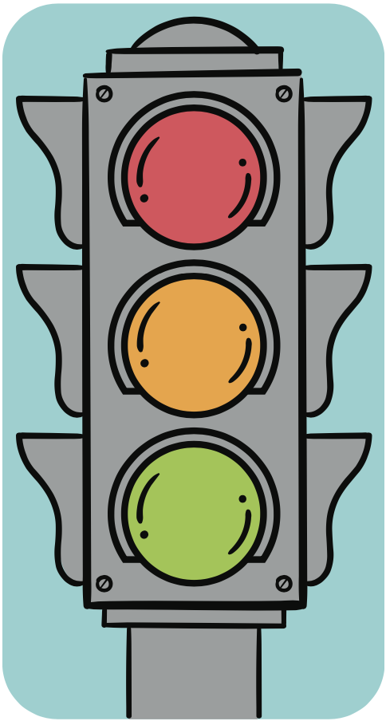

Tengo una vida saludable
Caminos para la convivencia y la reflexión
Encierra las respuestas a cada pregunta.
¿Cuáles son los hábitos saludables que debes implementar en tu casa?
Llevar una dieta saludable.
Ver televisión todo el día.
Realizar actividad física.
¿Qué actividades debes realizar en la escuela para tener una vida saludable?
Evitar los alimentos procesados.
Desayunar de manera saludable.
Aprender sobre alimentación sana.
Marca así
los hábitos que tienes en tu vida. Después escribe una conclusión en tu cuaderno sobre la importancia de tener una vida saludable.
